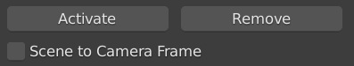

Rendering with LFT, LUT or Poly Cameras#
When rendering with a light field tracing (LFT), look-up table (LUT) or polynomial camera, special care has to be taken when preparing the scene. A LUT camera is, for example, a camera of the type pingen/opencv. LFT, LUT and polynomial cameras, simulate the image sensor with a plane of the reals sensor dimensions. The camera rays traced through that plane are refracted by a shader that implements the specific effects for the camera. For example, a LUT camera refracts the rays at the image plane to simulate the effective lens distortion.
Now, if the simulated image sensor pixels have a size of 3 microns and the image center is at a position (100, 50, 0), then the next pixel to right from the center is at position (100.000003, 50 ,0). Since Blender performs all rendering calculation with single precision, these pixel differences can introduce aliasing in the rendering. This problem can only be circumvented by placing the camera at the world origin.
Designing a scene where the camera is moving but always stays at the origin, means that everything has to move around the camera. This is cumbersome to set up by hand. Therefore, Catharsys offers an option to transform the whole scene such that the camera is at the origin, just for the rendering operation. That is, all modifiers and generators work in the inital scene. The transformation is applied just before the actual rendering is started.
Preparing the scene#
For this process to succeed, the scene needs to conform with a couple of requirements:
Only objects in the current view layer are transformed the satisfy all of the following:
no parent objects
no
follow pathconstraintno
anyvehiclerig
All objects that are instanced, should be placed in collections. These collections then have to be disabled, so that these “originals” are no longer displayed. As they are then no longer in the current view layer, they are also not transformed.
If the scene has a world shader, the world also needs to be rotated according to the transformation to the camera frame. This only works, if a
Vector Rotatenode with labelAnyCam.World.Rotateis found in the world shader. This vector rotate node needs to be connected appropriately within the world shader, of course. For example, typically there is a nodeTexture Coordinateto obtain the texture position. TheGeneratedcoordinate needs to be rotated by theVector Rotatenode, just as shown in this image:
Modifiers on objects can cause problems, as they are calculated after Catharsys has transformed the scene to the camera frame. Due to the single floating point precision, these modifiers may give slightly different results, when the whole scene is rotated and translated. For example, if a surface is placed on another surface with the
Shrinkwrapmodifier and a geometry shader is then applied to that surface, which randomly placed objects on that surface, the position and orientation of these objects can change considerably, even for small changes in the shrinkwrap results. You can solve this by applying all modifiers apart from the geometry shader.
You can test whether your scene works when transformed to the camera frame by selecting the checkbox
Scene to Camera Framein theanycamaddon.
Setting the configuration flag#
Note
See the configuration anycam/test-01 of the image-render-workspace-test workspace for a full example. You can install the workspace via cathy install workspace test.
The Catharsys render action only transforms the scene to the camera frame before rendering, when a specific flag is set. This is done in the lSettings list of the /catharsys/blender/render/output-list:1 configuration. You need to add the following block to the lSettings list:
{
"sDTI": "/catharsys/blender/render/settings/main:1",
"bTransformSceneToCameraFrame": true
}
The full output list config could, for example, look like this:
{
"sDTI": "/catharsys/blender/render/output-list:1",
"sId": "${filebasename}",
"__locals__": {
"settings": "${configpath}/_global/settings"
},
"lSettings": [
"$import{${settings}/render_v1, /catharsys/blender/render/settings/render:1}",
"$import{${settings}/cycles_v1, /catharsys/blender/render/settings/cycles:1}",
{
"sDTI": "/catharsys/blender/render/settings/main:1",
"bTransformSceneToCameraFrame": true
}
],
"lOutputs": [
"$import{output/image_v1, blender/render/output/image:1}"
]
}